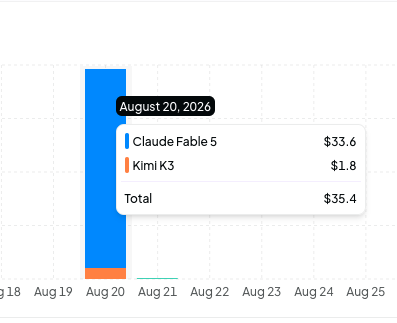
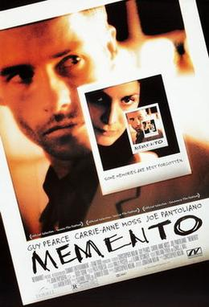
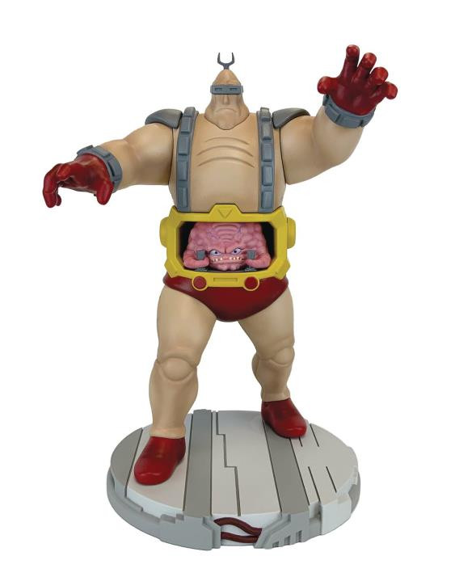

Contexto general
Generación de texto, traducción, análisis de sentimiento, escritura y depuración de código, texto a voz, voz a texto, generación de imágenes y videos, etc.
Las empresas entrenan y publican modelos para diferentes casos de uso
Puede ser costoso
Necesitamos acceso a internet
Enviamos nuestros datos a la API
Descargar modelos más pequeños en nuestro propio hardware
Sugerencia de Sara Altman y Simon Couch:

Cambiar nuestra atención entre diferentes tareas o programas cansa y quita productividad
> ¿Cómo agrego un subtítulo a mi figura de ggplot?
> ¿Cuáles son los argumentos de pivot_wider()?
> No puedo unir mi objeto tabla_1 con mi data frame dat3, ¡ayuda!
Notemos la diferencia en el tipo de pregunta. Esto será importante pronto.

No retienen memoria de interacciones previas
El contexto se logra enviando todos los mensajes previos con cada nueva petición
Debido a limitaciones de tokens y tamaño de contexto, hay estrategias para truncar, optimizar, o dejar archivos con apuntes persistentes
Inicia nuevos chats a menudo
Divide tareas entre chats
Usa prompts de sistema detallados

Las herramientas permiten que un modelo solicite una acción: buscar en la web, leer/escribir un archivo, ejecutar código, consultar una base de datos
El modelo no realiza la acción por sí mismo — la solicita, y un programa ejecuta la petición y le devuelve el resultado
Esta es la base de los flujos de trabajo “agénticos”